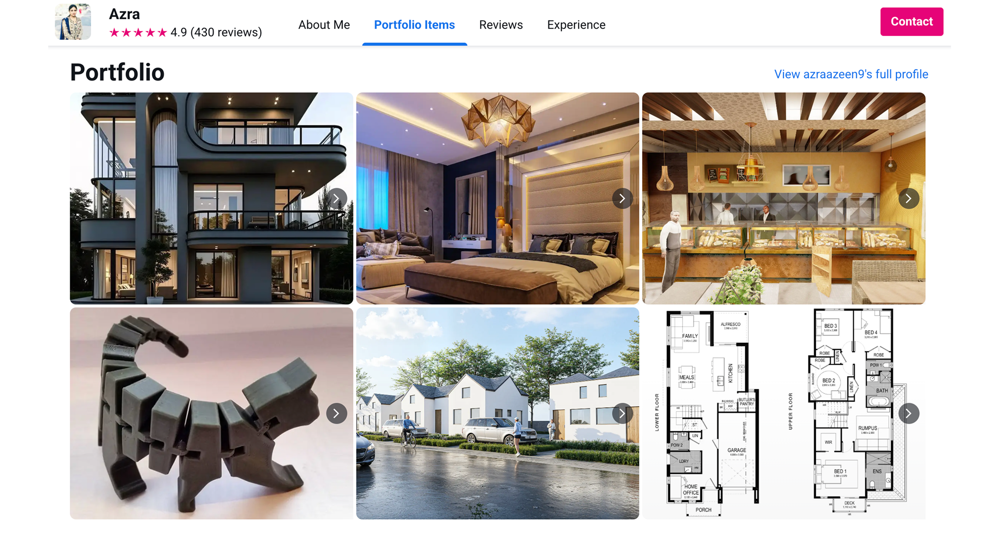
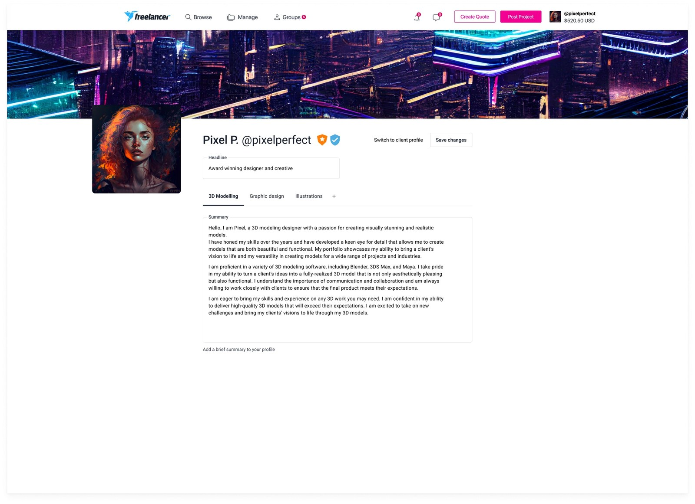
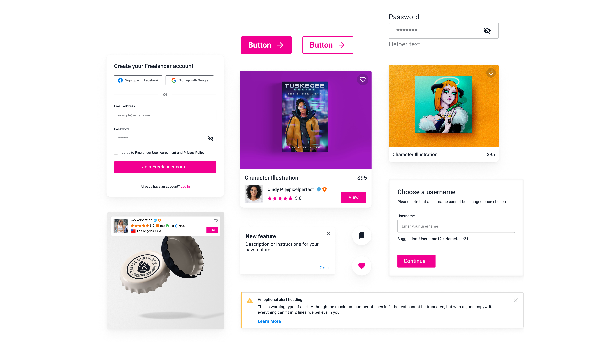

06 · Designing the experience
Bringing the profile together.
Put the work first
Portfolio work became the focal point of the profile, with larger imagery and more space for freelancers to show what they could do.

Edit in context
Editing previously opened in a modal, pulling freelancers away from the profile itself. I brought those controls directly into the page, so they could make changes and see the result straight away.

Keep trust easy to scan
Ratings, completed projects and badges stayed visible alongside the work, giving clients supporting context without competing for the same attention.

Push the visual language
I pushed Freelancer’s existing visual language further with brighter colours and more expressive layouts, while keeping it familiar within the Bits design system.
